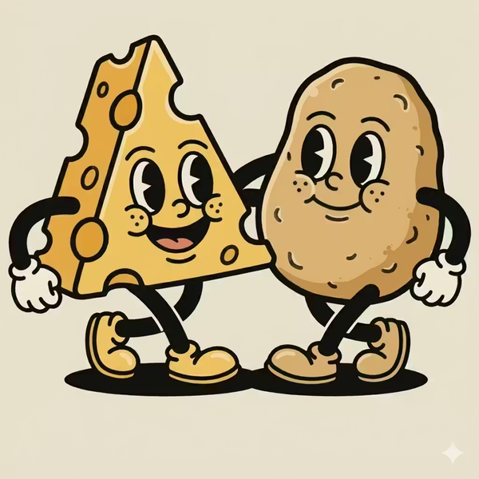

선생님과 1:1 수업 · Learn with the teacher

치즈감자 선생님 · CheesePotato teacher한국어 선생님 · 이 사이트를 만든 사람
Korean teacher · built this website
Korean teacher · built this website
Hi! I am a Korean teacher. I teach Korean on Preply, and I also built this website, CheesePotato — the courses, grammar, words and TOPIK practice you use here.
If you want to study with me 1:1, book a lesson on Preply. If you have a question first, send me a message on WhatsApp.
Lessons are booked and paid on Preply. WhatsApp is for questions.
한국어
안녕하세요! 한국어를 가르치는 한국어 선생님입니다. Preply 에서 한국어를 가르치고 있고, 이 사이트 치즈감자(코스 · 문법 · 단어 · TOPIK 연습)를 직접 만들었습니다.
1:1 수업을 받고 싶으면 Preply 에서 신청해 주세요. 먼저 궁금한 것이 있으면 WhatsApp 으로 메시지를 보내 주세요.
수업 신청 · 결제는 Preply 에서 합니다. WhatsApp 은 문의용이에요.
← 홈으로 · Home